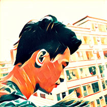
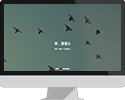
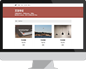

徐小坤
前端工程师
The font-end engineer
- 意向职位：
- Web前端开发
- 期望待遇：
- 面议
- 工作经历：
- 一年
- 教育经历：
- 重庆工商大学
- 专业：
- 工业设计
- 学历：
- 本科
- 出生日期：
- 1994年1月11日
- 目标城市：
- 深圳
- QQ：
- 996670910
- 微信：
- 135 2739 3894
- 电话：
- 135 2739 3894
- HTML
- CSS
- JavaScript
- jQuery
- Bootstrap
- Vuejs
- Wordpress
- PhotoShop
- 爱好:
- 旅行、绘画、吉他、厨艺
- 性格：
- 乐观向上，性情随和，踏实肯干
- 优势：
- 1. 拥有设计背景，熟练掌握设计软件，具有较高审美水平
- 2. 跨界自学代码，敢于挑战自我，善于钻研学习
- 态度：
- 没有什么是不可能的，只有努力与不努力
-
个人博客：
xiaokunxu.github.io -
github：
github.com/xiaokunxu -
邮箱：
13527393894@163.com
掌握技术
- 能够编写语义化的HTML，模块化的CSS，遵循W3C规范。掌握常见的页面布局，对BFC有一定的了解，能很好的运用浮动定位。
- 熟悉JavaScript、jQuery，实现日常交互效果
- 熟悉Ajax工作原理和实现方法，了解HTTP协议
- 熟练使用Git、Markdown、Sublime等前端开发工具
- 了解Bootsrap、Vue等常见前端框架
- 了解RequireJs模块化解决方案以及Gulp自动化构建工具
- 熟练使用PhotoShop、Axure等设计软件
项目经历
可交互页面
简介：可交互的动态网页，首屏大图为全屏轮播，Portfolio使用瀑布流布局，点击加载更多按钮会加载更多的数据，About每个时间区块默认隐藏，曝光渐变展示。
主要运用技术：使用requirejs进行模块化，jQuery实现轮播效果，瀑布流区域ajax获取后端数据，最后使用r.js打包应用
用户注册界面
简介：数据的提交，界面简洁漂亮
主要运用技术：ajax + php，异步加载

全屏轮播
简介：简单的全屏轮播效果
主要运用技术：HTML+CSS、jQuery

静态页面
简介：运用HTML进行布局，使用语义化标签
主要运用技术：HTML+CSS
日历组件
简介：简介的日历组件
主要运用技术：使用继承实现的日历组件